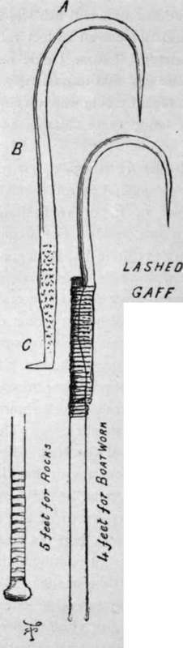

Fly Fishing In The Sea. Part 2
Description
This section is from the book "Sea Fishing", by John Bickerdyke. Also available from Amazon: Sea Fishing.
Fly Fishing In The Sea. Part 2
In 1893 the capture of a cod in Loch Nevis on a fly was reported in the ' Fishing Gazette,' and numerous other instances of sea fish taking salmon or other artificial flies of considerable size have been recorded from time to time in the ' Field,' ' Land and Water,' ' Rod and Gun,' the ' Angler,' and other sporting papers. I may mention in particular a cod of 12 lbs. caught by a friend of mine, the lure being a sole-skin fly fished at a depth of a foot or so. There is not much doubt that at times cod come close to the surface to feed on the whitebait fry.
Though fly fishing for bass and coalfish has been carried on for a good many years by a few people, not a great deal is really known about this branch of angling. I hope, however, that the rapidly increasing popularity of the sport will bring about such an accession of experience, that before long our knowledge on the subject may be very greatly increased.
Before dealing with what I may call the ' fly-taking sea fish, a word or two as to tackle may be necessary. The salmon fisher needs no teaching on this point, beyond perhaps a reminder that if he is casting for cuddies or small fish which weigh at the outside a pound, he need not use an 18-feet rod, nor a cast suitable for a 15-lb. salmon. Coarse tackle has prevailed for so many centuries in the sea, that immediately a man gets on salt water he seems to regard tackle which would be laughed at on river or lake as being quite suitable and proper for very small sea fish.
For those, then, who are not already fly fishers, a few remarks on rod, reel and line. The best general fly rod is made of greenheart, and should be about 15 ft. or 16 ft. long. That is a weapon to be used with two hands. For single-handed use for small fish, 11 ft., or 11 ft. 6 in., is a good length. The rod should be fitted with snake rings made of phosphor bronze or hardened German silver (on no account have steel rings bronzed over ; they invariably rust sooner or later), and for the top ring I like nothing better than my own little invention which is illustrated in the next chapter. It should be fitted with an inner revolving ring of phosphor bronze.
The rod should be fitted with suction ferrules which should be kept vaselined or oiled to prevent them sticking. The Weger and Warner winch fittings are about the best. The reel should be large in the barrel and free from any steel works or screws. For bass and other large fish, it must hold at least 150 yards of line ; for smaller fish, a hundred yards of line is sufficient—less will suffice in harbours. Of lines there is a great variety. The cheapest serviceable line is of eight-plait hemp or linen, tanned. We can have much the same thing made in silk, or an eight-plait silk line with the usual waterproof oil dressing.
The cast should consist, for bass, of two and a half or three yards of the strongest salmon gut, or, failing that, treble twisted medium gut. In the chapter on making up tackle I have described how casts should be twisted, flies tied on hooks, etc.
A gaff or landing net must be used according to the size of the fish ; anything over five or six pounds being best landed with the former instrument. The best gaffs for all kinds of purposes are not those screwed into sticks, but lashed on to a handle similar to the one shown in the illustration. When the gaff, which should be of steel (and not of iron, like one which was sold me last summer, and bent out nearly straight with the weight of a 10-lb. fish), gets a little rusty, give it a coat or two of varnish. The varnish will sink into the rust and make a very good protecting surface.
Not many people are aware that salmon have been caught in salt water on the fly. There are only a few places, so far as I know, where this has been done ; but in these places salmon are fished for regularly in this way. But then, of course, the sea is a big place, and the number of inlets, sea-lochs, estuaries, and the like, to which salmon resort in very large numbers, is limited. One of the smallest but most prolific salmon rivers in the United Kingdom is the Grimersta, which flows into Loch Roag, Island of Lewis. The fish are small, but more numerous than sea trout in many a fairly good sea-trout river. When the water in the river is low they collect in large numbers at and below its mouth.
On the 28th of July, 1888, Sir John H. Morris, to whom I am indebted for these particulars, caught five salmon with the fly in this sea-loch. The water in which the fish were caught was absolutely salt, not merely brackish, and as far distant as half a mile from the mouth of the river. The loch is shallow, from six to twelve feet in depth. The weather was cloudy; there was a good breeze, and the tide was flowing into the loch. Later on, however, the fish were also taken on an ebbing tide with very little wind. They rose best on the flood with a good stiff breeze.
The fly used on the 28th of July was a black and yellow (the Wasp) on a No. 5 hook, and was worked rather deeply in the water ; but other and larger flies were used with equal success. It is a curious fact that the fish had been waiting in the loch for ten days or a fortnight before they showed any inclination to take the fly. They continued to rise well for a week, and some sixty fresh fish were taken by five rods—sixty salmon in a week ! But they ceased to rise on the 4th of August.
Salmon had never been known to be caught on the fly in the bay before, and Sir John Morris attributed their rising during that week to the fact that they had been confined and kept in the sea loch long beyond their usual time for going up the river. But from a letter I have received from him recently it appears that a good many fish have been taken in the same way since that year. It is quite a common thing to catch sea trout in Loch Roag with the fly, and it was owing to the salmon rising to sea-trout flies that they were specially fished for.
Continue to:
Tags
fishing, hooks, bait, fishermen, spanish mackerel, mackerel fishing